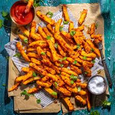

Chips Masala

Chips Masala
These chips taste great and are the perfect comfort food! They are spicy, without being overbearing. You can also adjust the level of heat, depending on how spicy you like your food.
Ingredients
- Potato Chips
- Cooking Oil
- One Red Onion
- Crushed Garlic
- Crushed Ginger
- Curry Powder
- Smoked or Sweet Paprika Powder
- Cumin Powder
- Garam Masala
- Black Pepper
- Salt
Instructions
- Prepare the chips (French fries) according to your preferred method (bake, fry, or air fry). Gather the rest of the ingredients.
- Heat oil in a medium-sized pan or skillet, and fry the diced onion until translucent and fragrant. Next, mix in the spices and salt.
- Next, add the garlic, ginger, tomato paste, and tomato sauce (ketchup), then combine. Reduce the heat to a low, and allow this to simmer, stirring from time to time. You can add 1-2 extra tablespoons of cooking oil, ketchup, or water if the pan or skillet feels too dry.
- Stir in the cooked chips or french fries and cook for a further few minutes. Garnish with sliced chilis (optional) and chopped coriander then serve. You can also garnish with chopped spring onion (scallions)